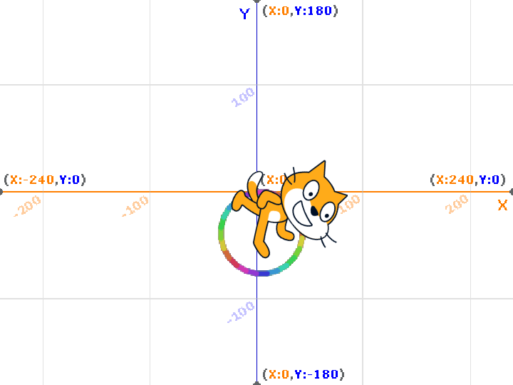

1週目のレポート ： 公大高専１年実習I-1
4b班26番 錦野結菜
第1週目
1-1 サイエンスアート

1.内容
スクラッチを使って、虹色の円を描いた。
2.感想
思っていたよりも小さい円になってしまったが、小学生の時に経験したものよりもはるかにレベルの高いものを作ることができたので良かった。I1ではもうScratchを扱うことはないが、自分が想像したもの、やりたいことを実現するということの第一歩としてこれからも挑戦し続けようと思った。
1-2 ゲーム
1.内容
ネコを操作して落ちてくるリンゴをキャッチするというゲームを作った。
2.感想
プログラムされたネコは良くも悪くも指示されたことだけを実行するので、自分のミスが顕著に表れて、なぜダメだったのか原因を考えることができた。どのようにプログラムすれば自分の思うように動かすことができるのかを考えることは面白かった。
1-3 ホームページ作成
私のホームページ
1.内容
githubを用いて、自分のホームページを作った。そのホームページでは、自分の趣味や所属する部活など自己紹介をした。
2.感想
初めての作業で私にはまだまだ難しかったけれど、ホームページの仕組みをしることができたのでもっとハイレベルなこともやってみたいと思った。